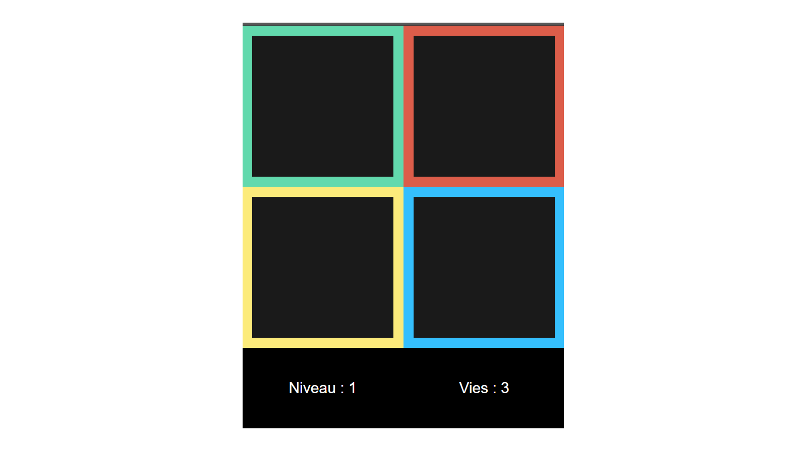
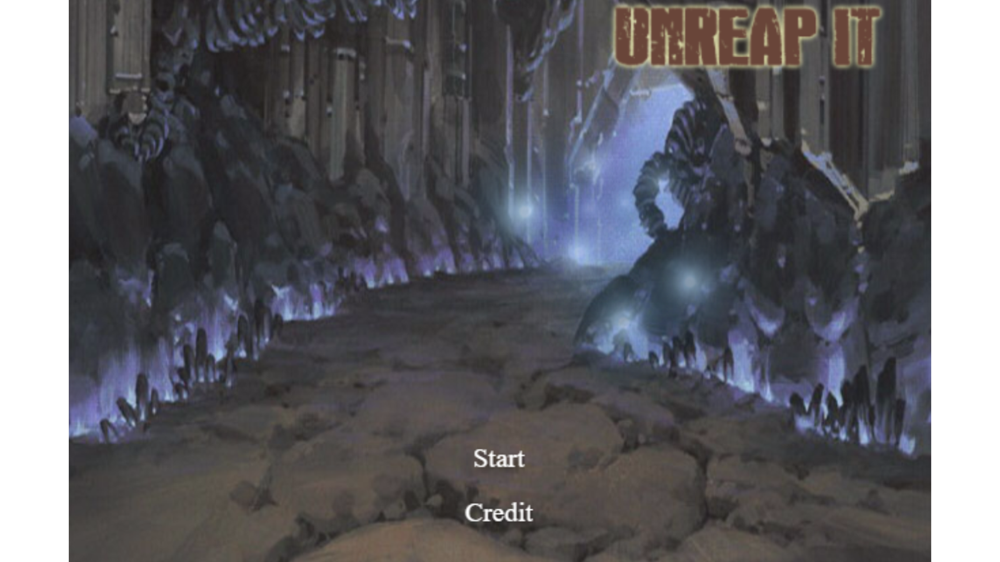
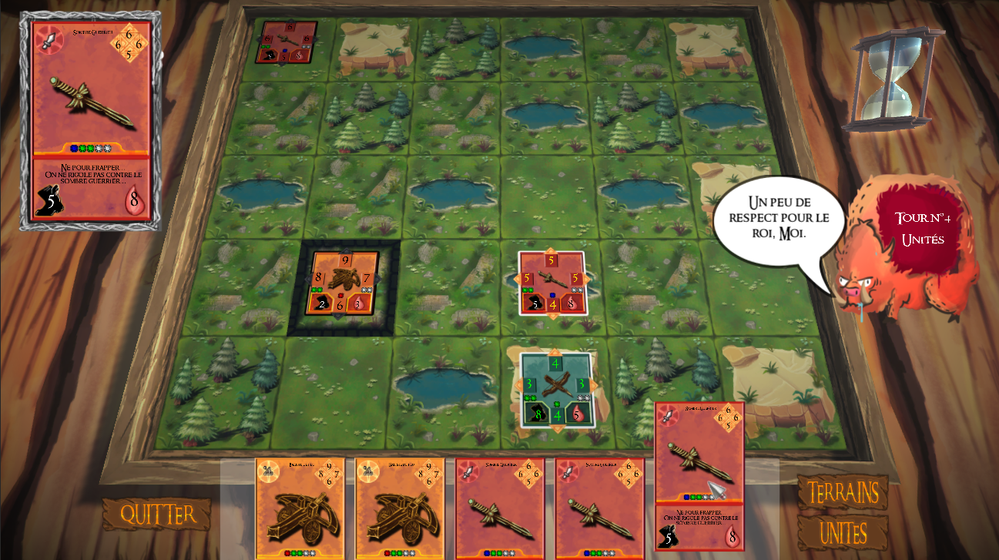

"Si le savoir peut créer des problèmes, ce n'est pas l'ignorance qui les résoudra."
About Me
Voici quelque information à propos de moi. Vous pouvez en trouvez plus dans mon C.V. .
Moi
Je suis un principalement développeur .NET et un javascripteur mais j'ai aussi des notions de Java. Je suis plutôt polyvalent, je me débrouille aussi bien pour les applications desktop (windows) et mobile (windows et Cordova pour les apps android et ios), le web ainsi que les jeux vidéo ( Unity3D et Phaser.io principalement). En ce moment, je fais surtout du web et du jeu vidéo ( Yamete Studio).
Ma formation
J’ai commencé par entreprendre des études d’ingénieur civil à l’Université Catholique de Louvain avant de me rendre compte que cela ne me plaisait pas. Ensuite j’ai suivi le cursus Science Informatique pendant 2 ans mais j’avais trop de difficultés avec les cours de droits et d’économie. Ensuite j’ai fait 1 an de technologie de l’informatique à l’ephec cependant je voulais devenir développeur pas technicien informatique. J’ai alors suivi deux formations chez Technobel : Développeur .NET puis Game Developper.
Mes passions
Je suis passionné de technologie et de jeux vidéo. J’adore démonter et réparer des ordinateurs. J’ai d’ailleurs monté il y quelque temps mon premier pc watercoolé. Je joue aussi au tennis de table, actuellement classé D2 pour le CTT Presgaux.
My works
Voici une présentation de certains de mes projects. J'en ai encore pas mal à ajouter mais certains on besoin de petites modifications.
Pour plus de détails (Code et Démo), consultez le site depuis un pc, il s'agit ici d'une présentation minimaliste.
AJOUT EN COURS
Simon

Un simple jeu "SIMON" crée en JavaScript, un jeu de mémoire dont le but est de reproduire une séquence de 4 couleurs la plus longue possible. C'est la seule démo fonctionnant sur mobile.
Démo
UnReap-it

Un project fait en groupe pendant 2 semaine pour la formation GameDev de Technobel. Il utilise phaser.io, un moteur de jeu 2D en javascript. Nous avons fait 4 niveaux + un Boss final. Il est assez facile de créer de nouveaux niveaux grâce à Tiled et un script d'importation.
Heroic Age

Le project final de ma formation .Net Developper. Ce project a été réalisé sous Unity3D en C# avec une équipe composée de 3 développeur, un chef de project et un graphiste.
Il s'agit d'un jeu de cartes et de stratégies. Les régles sont assez complexes. Nous avions prévu de faire une IA mais vu le manque de temps, nous avons du la simplifier énormement.